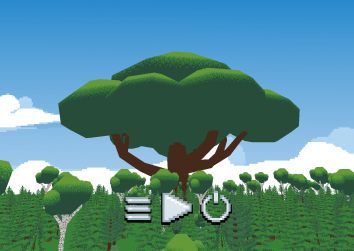
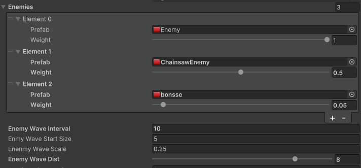
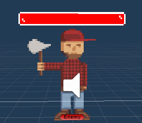
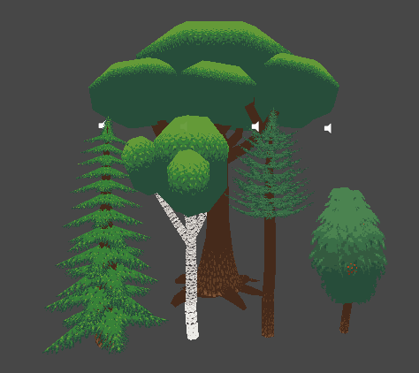

Defend the tree of life from deforestation! This game is about defending the Finnish
tree of
life, Iso Tammi, from modern deforestation by using its large network of roots to sprout
new
trees and make them attack the lumberjacks.
Developed at Finnish Game Jam 2023 Jyväskylä, Iso Tammi is a tower defense game where
your
task is to defend the large oak from Finnish Mythology.
The game was developed in Unity 3D with C# and modeled in Blender. The team was
divided into programmers (me and Lauri) and a 3D artist (Atte) with the rest of the
roles
filled as needed by everyone on the team.
My role
During the jam I worked on the gameplay systems such as enemies, spawning, trees and
attacking.
Enemy spawning
I implemented the enemy spawning in the GameController object in the scene. With these
controls the user could define a list of enemies that the game would spawn, how likely
they're to spawn, how often a new wave is created, how many enemies are in a wave and
how far away of the trees is the wave created.

Enemy list is a list of structs which are marked serializable so they are able to be changed in the editor. This makes it very easy to add new enemies and balance the game by changing the likely hood of each enemy.
Code snippet
public class gameController : MonoBehaviour
{
[SerializeField]
private List<EnemySpawnOption> enemies = new List<EnemySpawnOption>();
...
[System.Serializable]
private struct EnemySpawnOption
{
public GameObject Prefab;
[Range(0f, 1f)]
public float Weight;
}
}
Enemies

Enemies by themselves were the easiest to create. The enemy script only controls the
enemy characteristics such as enemy speed and damage. The different types were
implemented with Unity prefabs where each enemy got their own characteristics and art
The enemy script implements moving, attacking and getting damage. But most of these
actions are called from outside the script. By itself the script only turns the sprite
to look at the camera due to sprite implementation in a 3D enviroment. Moving is called
by gameController, which controls and keeps track of all of the enemies in the game. And
getting hit is called by the projectile, that hits the enemy.
Trees
Tree types

The game includes four types of spawnable trees and the Iso Tammi itself. Each tree can
attack with projectiles at the enemy, which can be sped up by pressing *space* when the
tree is selected, with their unique projectiles.
The tree script is similiar to the enemy script that all of the trees use the same
script, but with different serialized values. In these values you can speciefy the
projectile used, and attack paramters. Trees are spawned by the game controller when
player clicks a spot with a tree card selected. Trees eventually die when they've
received enough damage from the enemies.
Tree projectiles

Each tree has its unique projectile of which each has it's own strength
I impleneted these projectiles with inheritance, the spruce and pine projectiles being
the base class since they didn't have any special effects other than speed and damage.
The others had unique behavior e.i. exploding, hanging around and splitting to multiple
projectiles on hit. For these special effect I could just override behavior of the base
class for exmaple the acorn that explodes on hit.
Code snippet
protected override void onHit(GameObject enemy)
{
var enemiesInArea = gameController.GetEnemiesInArea(transform.position, splashRadius);
enemiesInArea.ForEach(e => e.GetComponent().GetHit(splashDamage));
base.onHit(enemy);
}